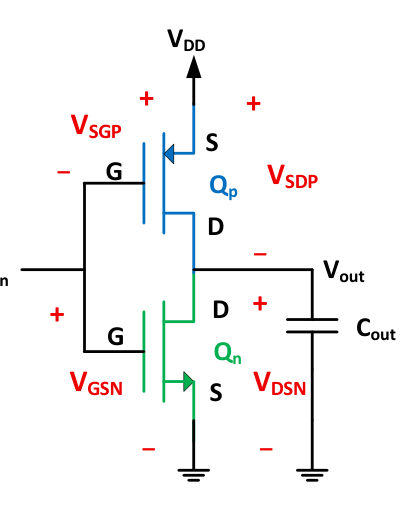
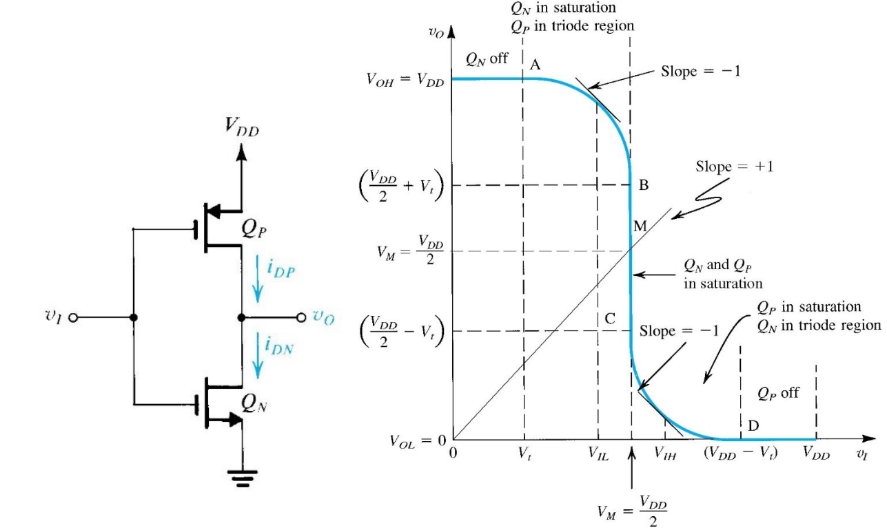
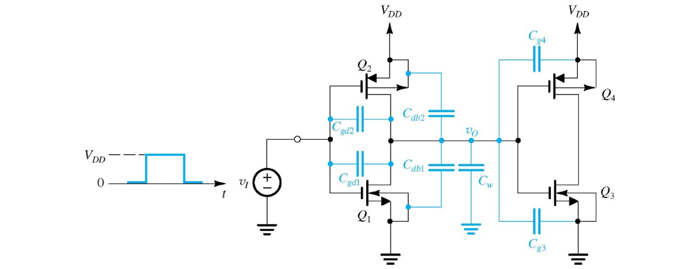
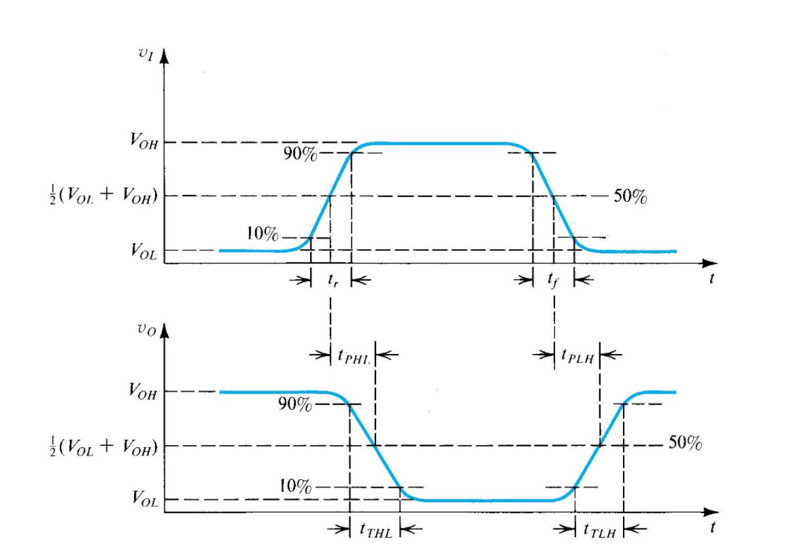
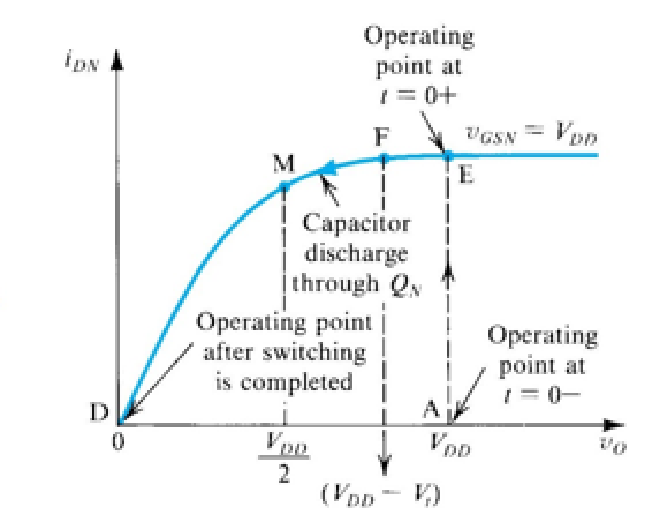

UNIT 4 · OFFICIAL EQUATION SHEET (FALL 2026, V1)
ECE 321 Unit 4 Equation Sheet: Digital Logic
Official reference sheet for the CMOS digital-logic lessons (Lessons 28–32): linear-triode resistance, pull-up and pull-down network synthesis, the CMOS inverter VTC, noise margins, matched and asymmetric inverters, propagation delay (average-current and equivalent-resistance methods), transistor sizing, and transient power dissipation. The instructor's PDF prints this as “Equation Sheet 5: Digital Logic” (V1).
1. Linear-Triode Resistance & Logic Levels Lesson 28
Transistor Linear-Triode Resistance
NMOS
PMOS
Levels a Transistor Passes Well
| Device | Pull-down network (PDN) | Pull-up network (PUN) |
|---|---|---|
| NMOS | ||
| PMOS |
2. CMOS Inverter, Logic Synthesis & Noise Margins Lessons 28-30
CMOS Inverter

Network roles
DeMorgan's Law & Synthesis
DeMorgan's Law
(1) Complement all variables; (2) swap AND/OR inside out; (3) complement the entire expression.
- Switches in series: AND. Switches in parallel: OR.
- PUN: must complement the inputs.
- Synthesis, PUN (): use DeMorgan's Law if the complement is over the entire expression; complement the input variables; series → AND, parallel → OR.
- Synthesis, PDN (): use DeMorgan's Law if the complement is over the entire expression; do not complement the input variables; series → AND, parallel → OR.
Noise Margins
Matched Inverter
Conditions
3. CMOS Inverter Voltage Transfer Curve (VTC) Lesson 30

Terminal Voltages
Region Conditions
NMOS
PMOS
VIH Derivation
Setup
Result
VTC Asymmetry
Switching threshold
Shift of noise margins
Silicon area
4. CMOS Inverter Dynamic Operation Lesson 31

Definitions: rise time, fall time, propagation delay times, transition times.

5. Propagation Delay Calculations Lesson 31
Method 1: Average Current

Average current
NMOS factor
PMOS factor
Method 2: Equivalent Resistance
Delays
Device resistances
Capacitance Estimation
Inverter 1 feeding Inverter 2 with wire:
6. Transistor Sizing Lesson 32
Optimal Inverter
- Choose L to be the minimum length permitted by the fab.
- To strictly minimize inverter area while still fitting contacts: .
- Trade area versus matching: .
- Increase to reduce R and therefore propagation delay.
- Then and .
Optimal Logic Circuit
- Find the longest series path through the PUN = u; reduce the path resistance by this factor by increasing the width of each W = u × p.
- Find the longest series path through the PDN = d; reduce the path resistance by this factor by increasing the width of each W = d × n.
- If not a single-path device, i.e. a switch in parallel with s series devices, make its resistance path the same: W = Wser/s.
7. Transient Power Dissipation Lesson 32
Average dynamic power